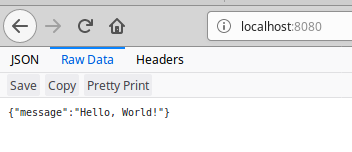
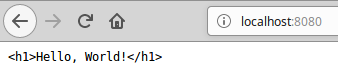

Response
Response ialah maklumat yang kita ingin pulangkan kepada pengguna seperti jenis, status dan kandungan response tersebut.
Jenis Response
Dalam Spring Boot, jenis response bergantung kepada jenis data yang kita return. Jika kita return String, kita akan memberi response dalam bentuk HTML secara default.
@GetMapping("/")
public String greeting() {
return "<h1>Hello, World!</h1>";
}
Jika kita return object, kita akan memberi response dalam bentuk JSON.
@RestController
public class GreetingController {
@GetMapping("/")
public Message greeting() {
return new Message("Hello, World!");
}
class Message {
private String message;
Message(String message) {
this.message = message;
}
public String getMessage() {
return message;
}
}
}

Format JSON selalu digunakan untuk komunikasi antara aplikasi. Contohnya Android, server yang lain, atau single-page application.
Jika kita ingin menetapkan jenis response secara manual, kita boleh meletakkan di parameter annotation seperti berikut:
@RestController
public class GreetingController {
@GetMapping(path = "/", produces = MediaType.TEXT_PLAIN_VALUE)
public String greeting() {
return "<h1>Hello, World!</h1>";
}
}
